FUN THINGS · P0-04 · 7 OCTOBER 2026
Petrol & Coral — complete concept review
Dark, vibrant color. Smooth stylized 3D. Ordinary architecture with a mix of low buildings and high-rises. A perspective camera looking straight down.
Accepted on 7 October as the starting art and city brief for continued work. Colors, smooth rendering and high-rises carry forward; dimensions and detailed designs refine through the proofs. Images are concept art, not engine captures or performance evidence.
The current street view
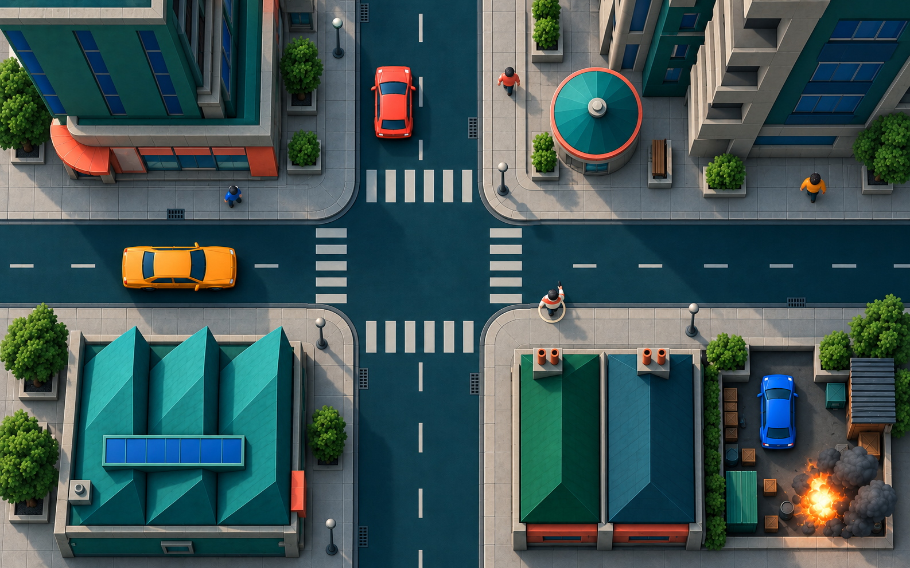
Reference observations from GTA2 screenshot 2 and screenshot 4: tall facades fill the edges around visible street action. Exact camera settings are not inferred from those images. Our building designs are original.
Cars and people
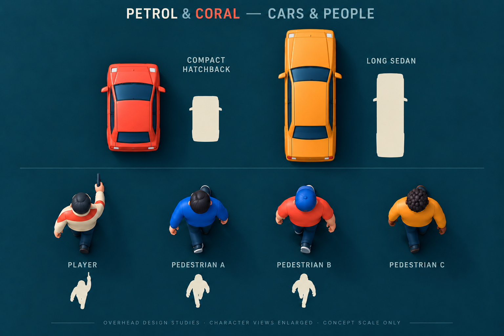
Low roofs and high-rises

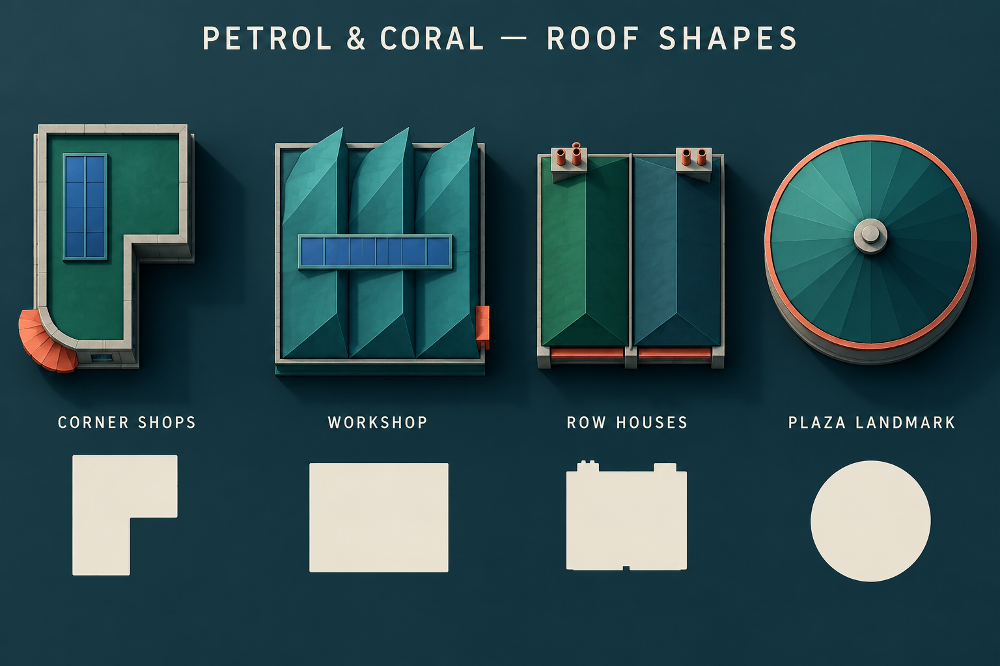

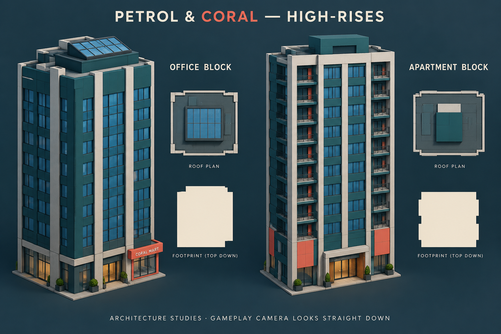
Weapons and effects
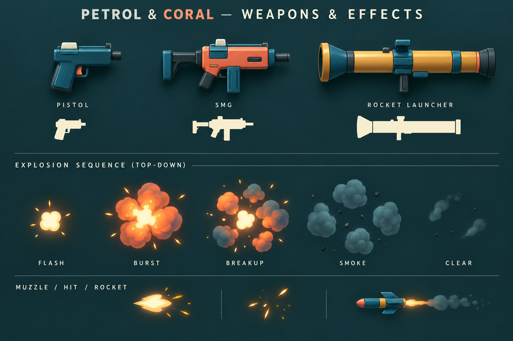
The accepted starting district
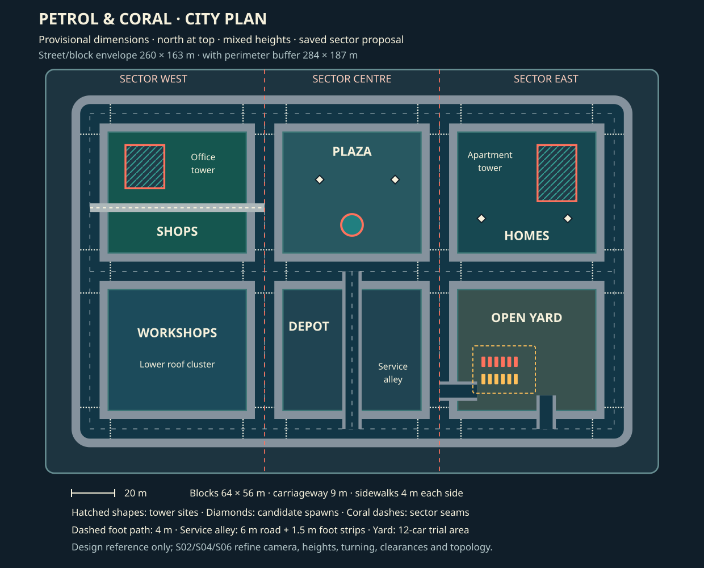
The amount of open space, tall/low mix and regular street grid are the starting design. The layout brief records provisional dimensions, camera starting values, saved-sector organization and the movement/visibility proofs still needed.
Earlier concepts, together for comparison
These are retained exploration history. Muted colors, noisy/pixel-like treatment and orthographic gameplay projection have been superseded.
Sunfaded Civic

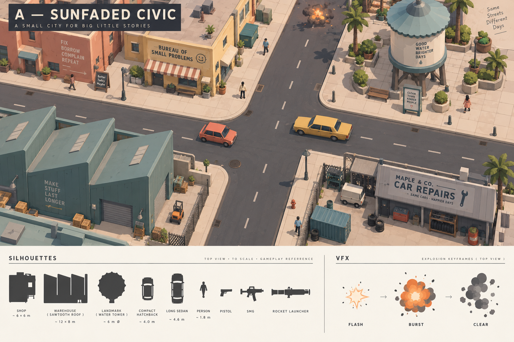
Stamped Industrial

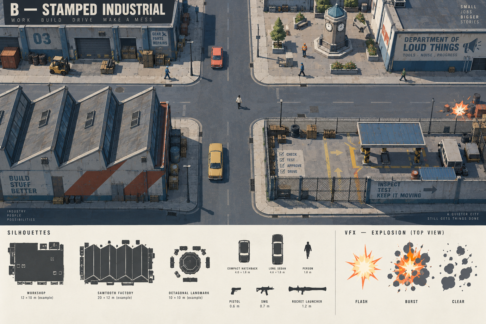
The palette comparison

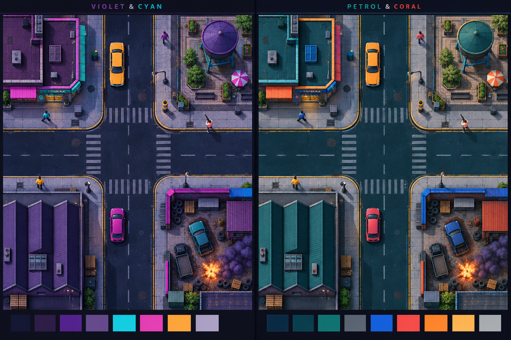
The first smooth 3D corner

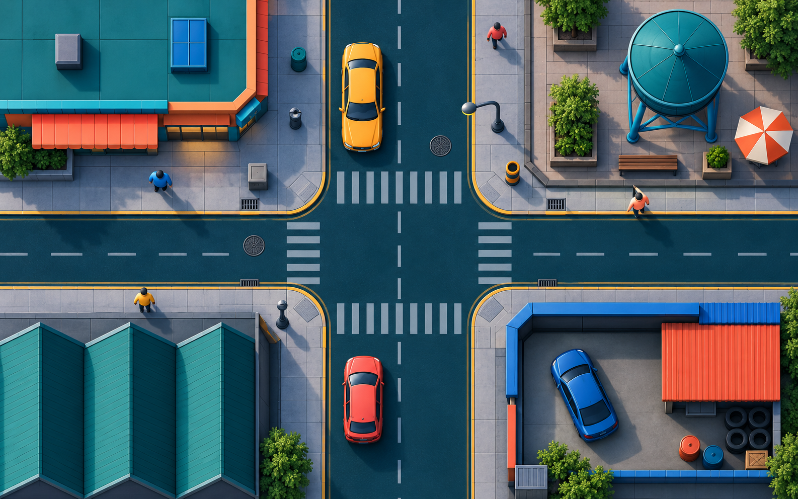
The first actor sheet

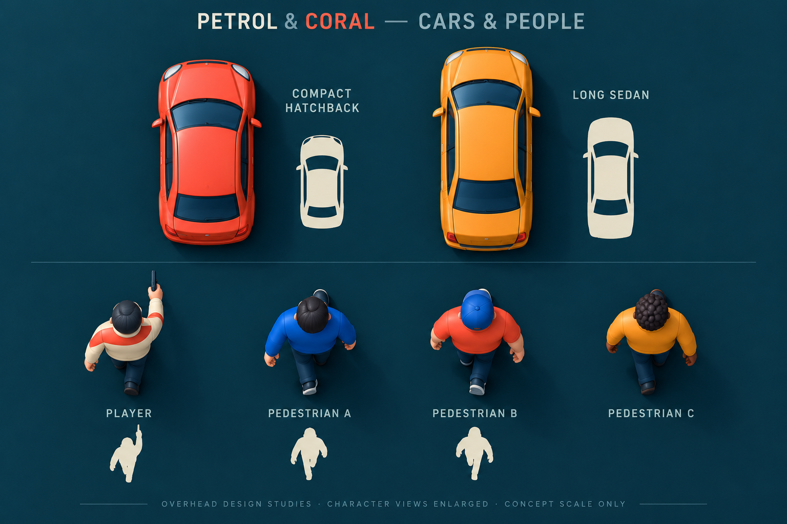
The low-rise street composition

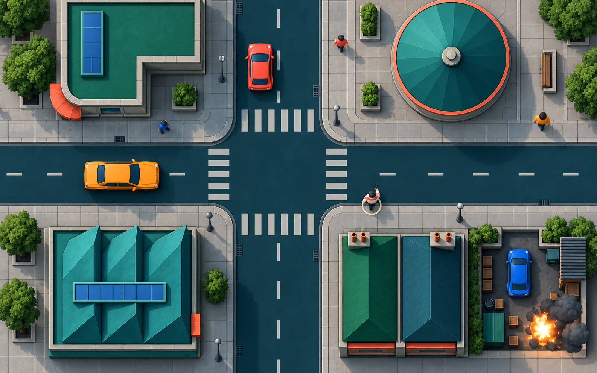
The first city shape

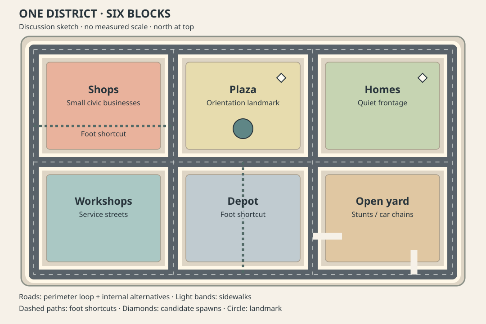